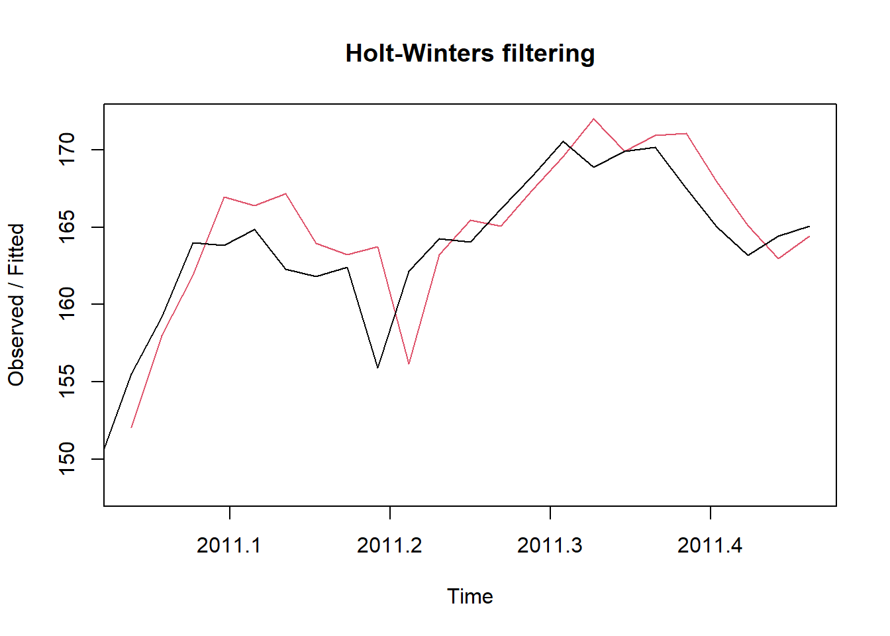
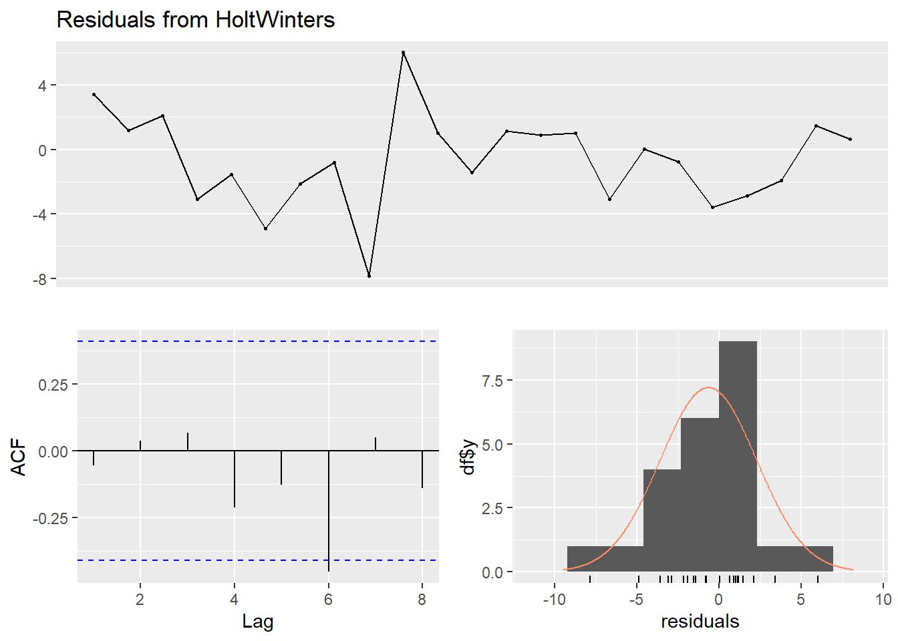
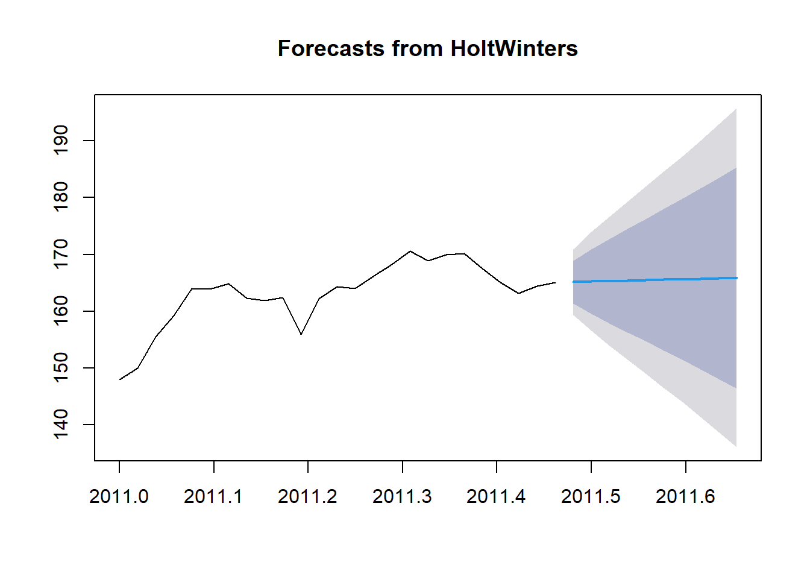

7 Holter_Winter
7.1 Aplicación el modelo Holt-Winters
Dado que la serie temporal es demasiado corta para identificar estacionalidad y no se pudo hacer la descomposición, procederemos a aplicar la metodología de Holt-Winters sin componente estacional y Aplicar el suavizamiento exponencial simple (SES) como una alternativa.
# Aplicar el modelo Holt-Winters sin componente estacional
hw_model <- HoltWinters(ts_data, gamma = FALSE)
# Ver el resumen del modelo Holt-Winters
summary(hw_model)## Length Class Mode
## fitted 69 mts numeric
## x 25 ts numeric
## alpha 1 -none- numeric
## beta 1 -none- numeric
## gamma 1 -none- logical
## coefficients 2 -none- numeric
## seasonal 1 -none- character
## SSE 1 -none- numeric
## call 3 -none- call

##
## Ljung-Box test
##
## data: Residuals from HoltWinters
## Q* = 2.1248, df = 5, p-value = 0.8316
##
## Model df: 0. Total lags used: 5# Realizar el pronóstico para los próximos 10 períodos
hw_forecast <- forecast(hw_model, h = 10)
# Visualizar el pronóstico
plot(hw_forecast)
El modelo Holt-Winters sin componente estacional se ajusta bien a los datos históricos, reflejado en la estrecha correspondencia entre la serie temporal original y los valores ajustados. Los parámetros de suavizado (alpha y beta) son cruciales para modelar la evolución temporal. La prueba de Ljung-Box indica que los residuos no tienen autocorrelación significativa (p = 0.8316), sugiriendo que el modelo captura la variabilidad de manera efectiva. El pronóstico a 10 períodos permite anticipar el comportamiento futuro de los precios de cierre de IBM, respaldado por un SSE bajo que indica un ajuste preciso del modelo a los datos observados.
/